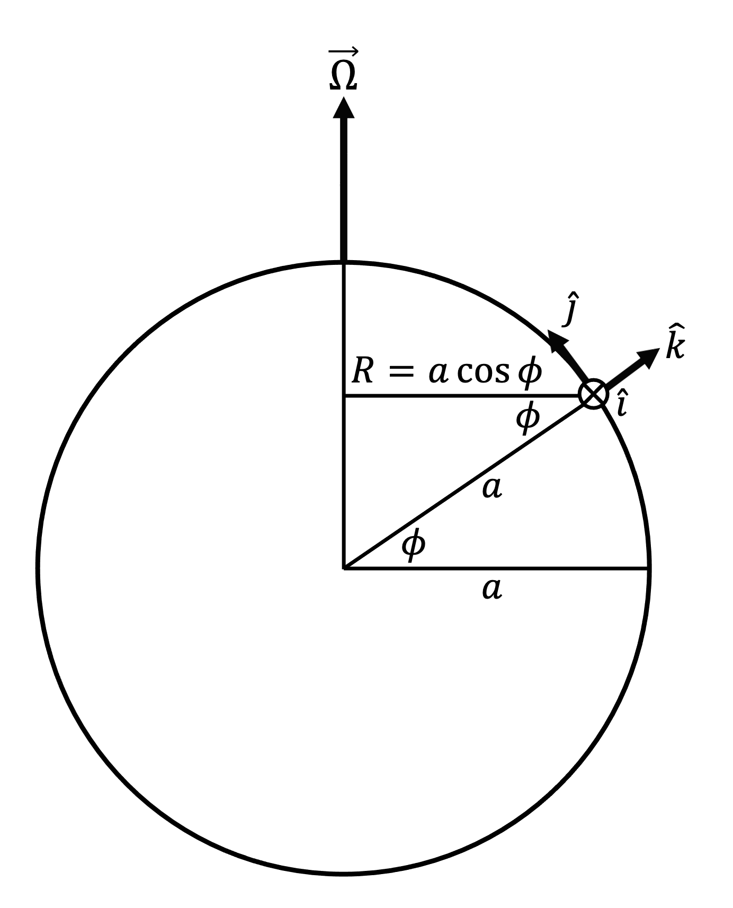
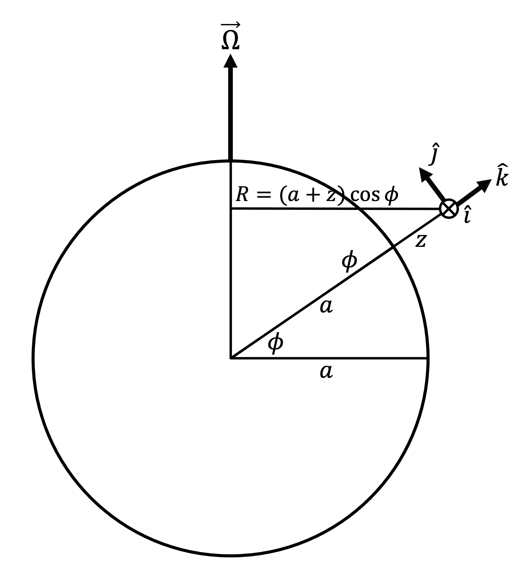
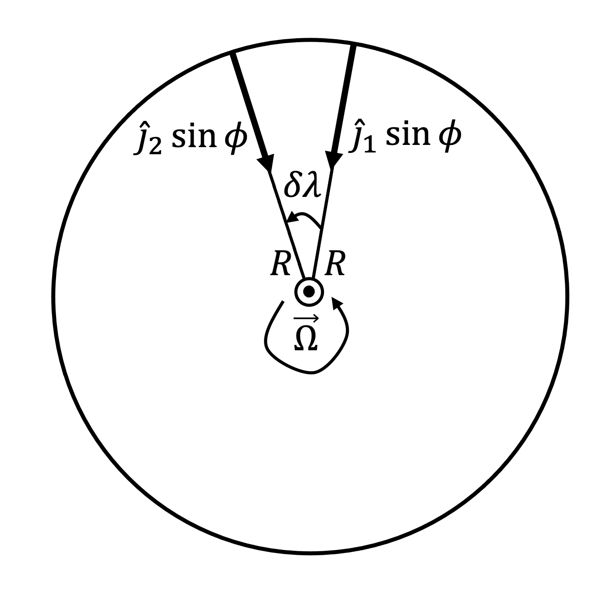
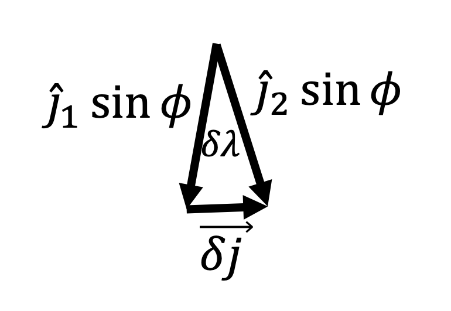
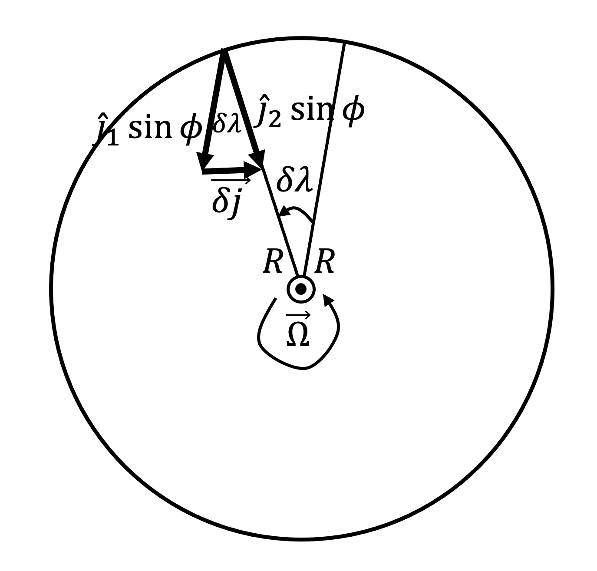
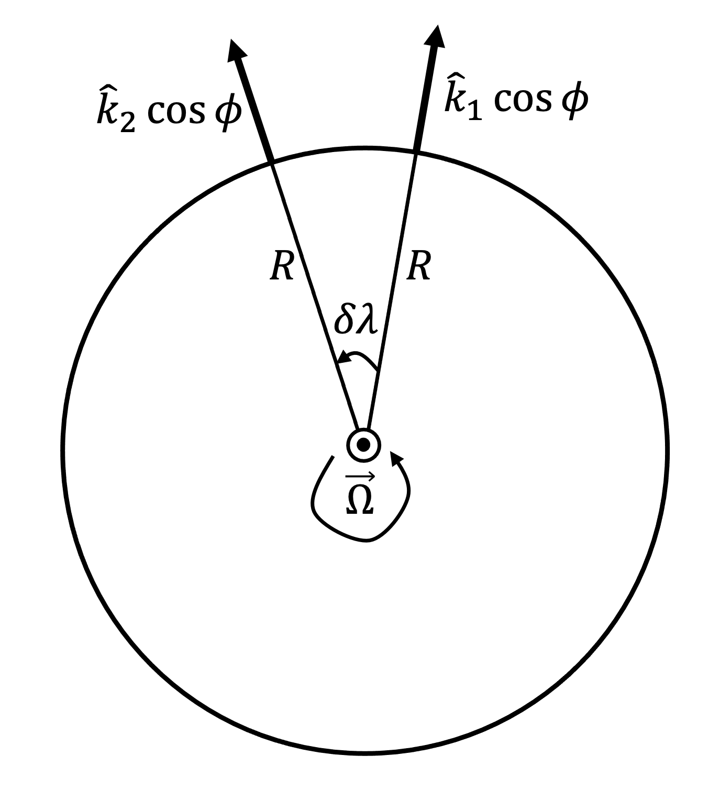
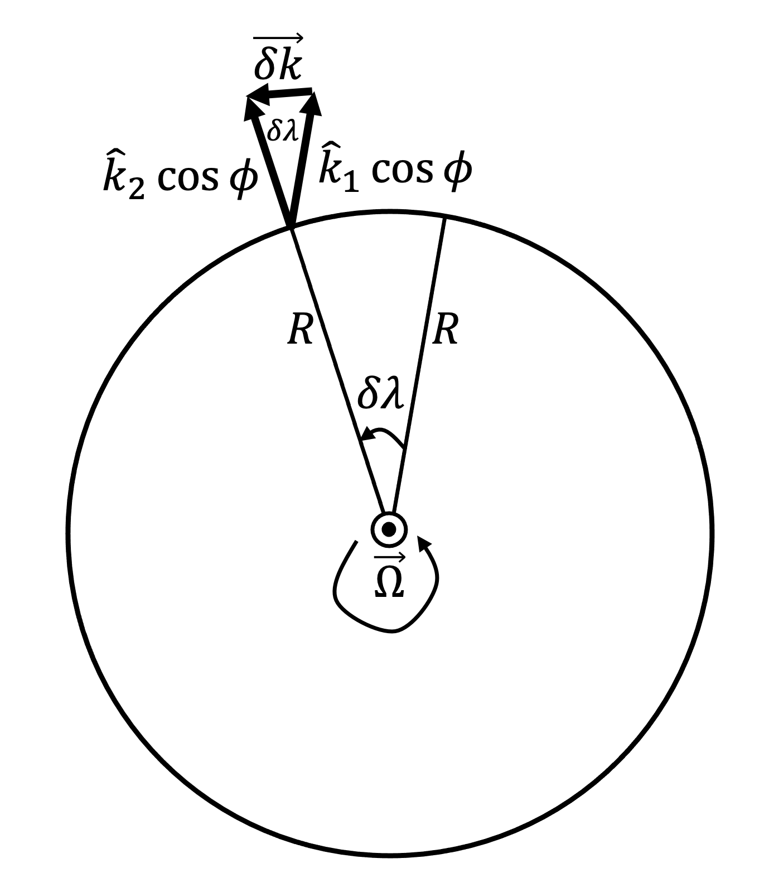
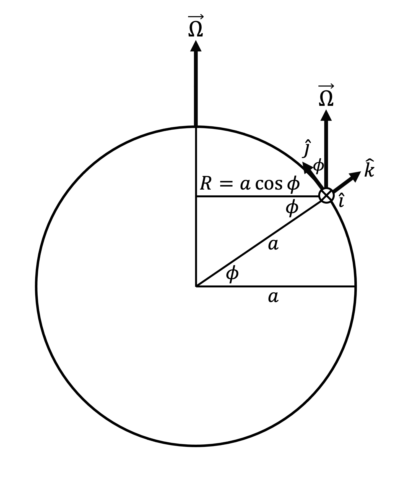

Section A.2 Derivation for Earth
The derivation for Earth is more complicated than the derivation for the turntable since Earth is spherical and therefore the orientations of \(\hat{j}\) and \(\hat{k}\) depend on latitude \(\phi\text{.}\)
But we can connect the derivation for the turntable to Earth by picturing a disk of radius \(R = a \cos{\phi}\text{,}\) where \(a\) is Earth’s mean radius, drawn perpendicular to Earth’s axis of rotation at latitude \(\phi\text{,}\) as shown in Figure A.2.1 below. Such a disk rotates with Earth’s constant angular velocity \(\vec{\Omega}\text{,}\) and \(\vec{\Omega}\) points perpendicular to the disk. Thus, the disk is like the turntable.
Again, all the unit direction vectors discussed below have an implied subscript "rot" since they are attached to Earth, which is a rotating reference frame.

As Figure A.2.1 shows, at any point fixed to the edge of such a disk drawn perpendicular to Earth’s axis of rotation, \(\hat{i}\) is tangent to the disk and points to the local east, \(\hat{j}\) points to the local north, and \(\hat{k}\) points locally upward. While \(\hat{i}\) for Earth directly corresponds to \(\hat{i}\) for the turntable, as both are tangent to the rotating disk and point in the direction of rotation, \(\hat{j}\) and \(\hat{k}\) for Earth do not directly correspond to \(\hat{j}\) and \(\hat{k}\) for the turntable, as \(\hat{j}\) does not point directly inward toward the axis of rotation since it does not lie on the disk, and \(\hat{k}\) does not point perpendicular to the disk. Instead, \(\hat{j}\) points along Earth’s surface toward the North Pole, and \(\hat{k}\) points perpendicular to Earth’s surface toward space.
Also note that \(\hat{k}\) does not point in the same direction as \(\vec{\Omega}\text{,}\) as was the case with the turntable. Instead, \(\vec{\Omega}\) points partially in the \(\hat{j}\) direction and partially in the \(\hat{k}\) direction. But we can still define the angular speed \(\Omega = \dfrac{D \lambda}{Dt}\) [\(\text{rad} \, \text{s}^{-1}\)] where \(\lambda\) [\(\text{rad}\)] is latitude. By these definitions, during a period of time \(\delta t\text{,}\) the disk rotates through angular displacement \(\delta \lambda\text{.}\)
Note that any point in Earth’s atmosphere at latitude \(\phi\) can be produced simply by increasing the value of \(R\) via \(R = (a + z) \cos{\phi}\text{,}\) where \(z \gt 0\) for a point in the atmosphere, as shown in Figure A.2.2 below. Thus, the following derivations apply to any point in Earth’s atmosphere as well as on its surface, even though they are presented for a point on Earth’s surface for simplicity.
Finally, remember that a "point" in Earth’s atmosphere refers to a volume element.

Subsection A.2.1 Expanding the total derivative of \(\hat{i}\)
There are only two differences between the derivation of \(\dfrac{D \hat{i}}{Dt}\) for a disk at latitude \(\phi\) on Earth and the derivation of \(\dfrac{D \hat{i}}{Dt}\) for the turntable.
-
\(\vec{\delta i}\) points in the direction of \(\hat{j} \, \sin{\phi} - \hat{k} \, \cos{\phi}\) rather than in the direction of \(\hat{j}\text{.}\)
-
\(R = a \cos{\phi}\text{.}\)
Therefore,
\begin{equation}
\frac{D \hat{i}}{D t}
=
\Omega \left(
\hat{j} \sin{\phi}
- \hat{k} \cos{\phi}
\right)
=
\Omega \sin{\phi} \, \hat{j}
- \Omega \cos{\phi} \, \hat{k}\tag{A.2.1}
\end{equation}
Subsection A.2.2 Expanding the total derivative of \(\hat{j}\)
\begin{equation*}
\hat{j} \, \sin{\phi}
\end{equation*}
and its component perpendicular to the disk
\begin{equation*}
\hat{j} \, \cos{\phi}
\end{equation*}
The component of \(\hat{j}\) perpendicular to the disk, \(\hat{j} \, \cos{\phi}\text{,}\) behaves like \(\hat{k}\) for the turntable: Its orientation does not change no matter where it is placed in the plane of the disk or at what height it is placed above or below the disk and no matter the angle through which the disk rotates. Consequently, we only need to consider the component of \(\hat{j}\) parallel to the disk, \(\hat{j} \, \sin{\phi}\text{.}\)
The following derivation follows that for the turntable, with \(\hat{j}\) replaced by \(\hat{j} \, \sin{\phi}\text{.}\) Only the most pertinent steps are reproduced, since the reader can refer to the corresponding turntable derivation for all steps.
To evaluate \(\dfrac{\partial \hat{j}}{\partial \lambda}\text{,}\) we consider the change in \(\hat{j} \, \sin{\phi}\)’s orientation when its anchoring point is fixed to the edge of the disk and sweeps through angular displacement \(\delta \lambda\) over time \(\delta t\text{,}\) as shown in Figure A.2.3 below. \(\hat{j}_1 \, \sin{\phi}\) is the initial position of \(\hat{j} \, \sin{\phi}\text{,}\) and \(\hat{j}_2 \, \sin{\phi}\) is the final position of \(\hat{j} \, \sin{\phi}\) after time \(\delta t\) has passed and it has swept through angular displacement \(\delta \lambda\text{.}\)

Fixing the tails of \(\hat{j}_1 \, \sin{\phi}\) and \(\hat{j}_2 \, \sin{\phi}\) together in Figure A.2.4 below reveals that \(\delta \lambda\) is the angle swept out between them and \(\vec{\delta j}\) is the vector difference between them.

Reproducing Figure A.2.3 with the tail of \(\hat{j}_1 \, \sin{\phi}\) moved to the tail of \(\hat{j}_2 \, \sin{\phi}\) and \(\vec{\delta j}\) additionally included in Figure A.2.5 below makes these relationships even clearer.

Again, we can use the arc length formula to approximate \(|\vec{\delta j}|\text{,}\) and we can take advantage of the fact that, since \(\hat{j}\) is a unit direction vector, \(|\hat{j}| = 1\text{.}\)
\begin{equation}
|\vec{\delta j}|
= |\hat{j_1}| (\sin{\phi}) \, \delta \lambda
= |\hat{j_2}| (\sin{\phi}) \, \delta \lambda
= |\hat{j}| (\sin{\phi}) \, \delta \lambda
= (\sin{\phi}) \, \delta \lambda\tag{A.2.2}
\end{equation}
From Figure A.2.5, we can see that as \(\delta t \to 0\text{,}\) \(\delta \lambda \to 0\) and \(\vec{\delta j}\) points to the local west, which coincides with the \(-\hat{i}\) direction. So
\begin{equation}
\frac{D \hat{j}}{D t}
=
-\Omega \sin{\phi} \, \hat{i}\tag{A.2.3}
\end{equation}
Subsection A.2.3 Expanding the total derivative of \(\hat{k}\)
As we did for \(\hat{j}\) in Subsection A.2.2, we split \(\hat{k}\) into its component parallel to the disk at latitude \(\phi\text{.}\)
\begin{equation*}
\hat{k} \, \cos{\phi}
\end{equation*}
and its component perpendicular to the disk
\begin{equation*}
\hat{k} \, \sin{\phi}
\end{equation*}
The component of \(\hat{k}\) perpendicular to the disk, \(\hat{k} \, \sin{\phi}\text{,}\) behaves like \(\hat{k}\) for the turntable: Its orientation does not change no matter where it is placed in the plane of the disk or at what height it is placed above or below the disk and no matter the angle through which the disk rotates. Consequently, we only need to consider the component of \(\hat{k}\) parallel to the disk, \(\hat{j} \, \sin{\phi}\text{.}\)
While there is no equivalent derivation for the turntable for \(\hat{k}\text{,}\) this is similar to the \(\hat{j}\) derivation except that \(\hat{k} \, \cos{\phi}\) points outward away from the center of the disk rather than inward toward the center of the disk.
The following derivation follows that for the turntable for \(\hat{j}\text{,}\) with \(\hat{j}\) replaced by \(\hat{k} \, \cos{\phi}\text{.}\) Only the most pertinent steps are reproduced, since the reader can refer to the corresponding turntable derivation for all steps.
To evaluate \(\dfrac{\partial \hat{k}}{\partial \lambda}\text{,}\) we consider the change in \(\hat{k} \, \cos{\phi}\)’s orientation when its anchoring point is fixed to the edge of the disk and sweeps through angular displacement \(\delta \lambda\) over time \(\delta t\text{,}\) as shown in Figure A.2.6 below. \(\hat{k}_1 \, \cos{\phi}\) is the initial position of \(\hat{k} \, \cos{\phi}\text{,}\) and \(\hat{k}_2 \, \cos{\phi}\) is the final position of \(\hat{k} \, \cos{\phi}\) after time \(\delta t\) has passed and it has swept through angular displacement \(\delta \lambda\text{.}\)

Fixing the tails of \(\hat{k}_1 \, \cos{\phi}\) and \(\hat{k}_2 \, \cos{\phi}\) together in Figure A.2.7 below reveals that \(\delta \lambda\) is the angle swept out between them and \(\vec{\delta k}\) is the vector difference between them.

Reproducing Figure A.2.6 with the tail of \(\hat{k}_1 \, \cos{\phi}\) moved to the tail of \(\hat{k}_2 \, \cos{\phi}\) and \(\vec{\delta k}\) additionally included in Figure A.2.8 below makes these relationships even clearer.

Again, we can use the arc length formula to approximate \(|\vec{\delta k}|\text{,}\) and we can take advantage of the fact that, since \(\hat{k}\) is a unit direction vector, \(|\hat{k}| = 1\text{.}\)
\begin{equation}
|\vec{\delta k}|
= |\hat{k_1}| (\cos{\phi}) \, \delta \lambda
= |\hat{k_2}| (\cos{\phi}) \, \delta \lambda
= |\hat{k}| (\cos{\phi}) \, \delta \lambda
= (\cos{\phi}) \, \delta \lambda\tag{A.2.4}
\end{equation}
From Figure A.2.8, we can see that as \(\delta t \to 0\text{,}\) \(\delta \lambda \to 0\) and \(\vec{\delta k}\) points to the local east, which coincides with the \(\hat{i}\) direction. So
\begin{equation}
\frac{D \hat{k}}{D t}
=
\Omega \cos{\phi} \, \hat{i}\tag{A.2.5}
\end{equation}
Subsection A.2.4 Putting everything together for Earth
As shown in Figure A.2.9 below,
\begin{equation}
\vec{\Omega} = \Omega \cos{\phi} \, \hat{j} + \Omega \sin{\phi} \, \hat{k}\tag{A.2.6}
\end{equation}
Thus, we can find \(\vec{\Omega} \times \hat{i}\text{,}\) \(\vec{\Omega} \times \hat{j}\text{,}\) and \(\vec{\Omega} \times \hat{k}\) and verify they match the results of (A.2.1), (A.2.3), and (A.2.5), respectively.
\begin{equation}
\vec{\Omega} \times \hat{i}
=
\Omega \sin{\phi} \, \hat{j}
- \Omega \cos{\phi} \, \hat{k}
=
\frac{D \hat{i}}{Dt}\tag{A.2.7}
\end{equation}
\begin{equation}
\vec{\Omega} \times \hat{j}
=
-\Omega \sin{\phi} \, \hat{i}
=
\frac{D \hat{j}}{Dt}\tag{A.2.8}
\end{equation}
\begin{equation}
\vec{\Omega} \times \hat{k}
=
\Omega \cos{\phi} \, \hat{i}
=
\frac{D \hat{k}}{Dt}\tag{A.2.9}
\end{equation}
Therefore, the derivation is complete.
